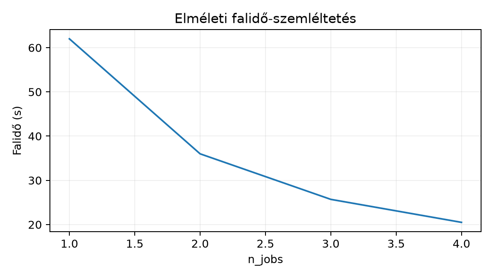

Belépő · [BŐVÍTŐ MODUL] · szint: haladó · idő: 90 perc · eszköz: cProfile, threadpoolctl, joblib
Előfeltétel: 33.2. alfejezet · Célkészség: Párhuzamos modellkeresés erőforráskerettel · Kimenet: projektartefaktum és ellenőrzött futtatási jegyzőkönyv.
A feladatunk nem egy új modell betanítása, hanem egy kétparaméteres
keresés megtervezése úgy, hogy az adott idő- és memóriakeretbe
beleférjen. A Northstar prediktív labor egyik lépéseként egy
RandomForestClassifier két hiperparaméterét hangoljuk belső
5-szörös keresztvalidációval (CV). A gép 4 fizikai magos, 8 GiB RAM-mal.
A keret: legfeljebb 90 másodperc falóra idő (wall-clock time) és
legfeljebb 1 GiB memória.
Az input X 5 000 sorból és 60 oszlopból álló
float64 mátrix, y 5 000 elemű egész célvektor.
A rács n_estimators értékeire [50, 100],
max_features értékeire [0.3, 0.5, "sqrt"]
szól, tehát
paraméterkombináció. A megfigyelési egység e laborban egy
fit+score feladat: egy paraméterkombináció egy
belső foldon. A keresztvalidációs futásszám ezért
.
A GridSearchCV alapértelmezett refit=True
beállítása ezen felül egy végső fitet végez a legjobb
paraméterrel a teljes tanítóhalmazon, így az összes
estimator.fit hívás száma 31.
Előzetes becslés (nem mért): egy feladat CPU-ideje körülbelül 2,0 s, így a teljes CPU-munka . Két workerrel optimistán számolva a falóra idő nagyjából , a memória pedig néhány száz MiB. A terv akkor jó, ha egy kis kontrollfutás megerősíti a 62 CPU-s nagyságrendet, mielőtt a teljes rácsot elindítjuk. Hogy ez mennyire nem magától értetődő: a példa egy korábbi, 50 000 soros változatában a belső lektorálás egy 16 logikai magos gépen egyetlen kontrollfitre 31,5 s-ot mért, amivel a teljes rács CPU-munkája kb. 975 s lett volna, és semmilyen worker-számmal nem fért volna a 90 s-os keretbe. Ezért csökkentettük az adatot 5 000 sorra; a tényleges kontrollidőt a saját gépeden mérd.
A GridSearchCV(n_jobs=...) argumentuma azt mondja meg,
hány worker folyamatot indíthat a joblib. Az n_jobs=-1 a
gépen elérhető összes logikai CPU magot jelenti, de ez nem növeli a
feladatok számát, csak a falóra idő csökkentésére ad lehetőséget.
A keresés teljes fit-száma két részből áll: a
keresztvalidációs fitekből és a végső refitből.
ahol:
GridSearchCV foldjainak száma,refit=True, ez az alapértelmezés), különben
0.Az aktuális példánkban
,
,
külső CV nélkül:
,
és a refit miatt
.
Egy jövőbeli külső 5-fold hozzáadásakor
,
a foldonkénti refittel
;
ha a külső kereső a végén még egy végső modellt is illeszt, az további
,
azaz 156. A szorzás nem a magok számától, hanem a kísérleti szerkezettől
és a refit beállítástól függ.
Ha egy feladat átlagos CPU-idejét jelöli, a teljes CPU-munka:
A párhuzamos falóra idő közelítőleg:
ahol
a ténylegesen hasznos párhuzamosság,
pedig a folyamatindítás és a dispatcher költsége másodpercben. Ha a
modell CPU-kötött és minden mag szabad,
közel lehet az n_jobs-hoz; ha a memória sávszélesség vagy
az I/O telítődik,
kisebb.
Például a 30 CV-fit és 1 refit mellett s CPU-munka; 2 workerrel a falóra idő , ha nincs oversubscription. A párhuzamosítás nem csökkenti a CPU-összeget, sőt az overhead miatt kismértékben növelheti.
A szemléltető görbe a 62 CPU-s, 5 s overheades elméleti falóra időt mutatja:

A pre_dispatch a dispatcher által előre elküldött, a
szülőfolyamat memóriájában várakozó feladatok számát korlátozza. Az int
érték közvetlen feladatszám, az alapértelmezett "2*n_jobs"
pedig az n_jobs kétszerese. Ha minden feladat nagy bemeneti
adatot visz, a magas pre_dispatch a szülőfolyamat
memóriáját növeli; a worker folyamatok memóriáját azonban nem ez, hanem
a lemásolt X, y és a felépült modell határozza
meg.
A GridSearchCV a joblib-et használja. Az alapértelmezett
loky backend újrahasznosítható munkafolyamatokat indít;
ilyenkor minden worker külön Python-interpreterrel fut. A
threading backend szálakat használ: Python-számításnál a
GIL miatt általában nem gyorsít, natív NumPy/BLAS kódban viszont hasznos
lehet. A backendet contextben lehet váltani, például
with parallel_backend("threading"): alatt. A könyv fő esete
a loky, mert a faépítés Python- és numpy-kódot is váltogat.
Nested parallelism akkor alakul ki, ha a belső becslő maga is
n_jobs-ot kap. Például GridSearchCV(n_jobs=4)
és RandomForestClassifier(n_jobs=-1) együtt egy 4 logikai
magos gépen akár
(8 logikai magon
)
aktív feldolgozó szálat is létrehozhat, amelyek egymástól veszik el a
CPU-időt. A hatékony megoldás a szintek szétválasztása: a külső
párhuzamosítás folyamatokkal, a belső modell n_jobs=1
értékkel, vagy fordítva, attól függően, melyik ad kisebb overheadet.
A memóriaterv képlete:
ahol:
cv_results_
tárolóval,X[train_idx], kb. az X 80%-a 5-fold CV-nél)
saját másolat, és ide tartozik a fitted modell is; a teljes
X-et a joblib alapértelmezésben memmap-eli, így az nem
workerenként másolódik (lásd lent),A mértékegységeket MiB-ben használjuk. A pre_dispatch
tehát csak a képlet utolsó tagját szabályozza, a worker-memóriát
nem.
| Jel | Jelentés | Mértékegység | Feltevés |
|---|---|---|---|
keresztvalidációs fit+score feladatok
száma |
darab | ||
| végső refit van-e | 0/1 | refit=True esetén 1, különben 0 |
|
összes estimator.fit hívás |
darab | ||
| egy feladat átlagos CPU-ideje | s/feladat | azonos méretű feladatok, ugyanaz a modell | |
| teljes CPU-munka | s | ||
| processzindítás és dispatcher | s | üres feladatokkal mérhető | |
| falóra idő | s | ||
| workerenkénti bemenetmásolás | MiB | , ha nincs memmap | |
| workerenkénti BLAS/OMP szál | darab | n_jobs × n_native ne haladja meg a magokat |
|
| ténylegesen hasznos párhuzamosság | darab | CPU-kötött munka, nincs oversubscription | |
| becsült memóriaigény | MiB | ||
| egy várakozó feladat bemenetének mérete | MiB | a bemeneti mátrix és a modell másolata |
A táblázat feltételei mellett a számok összhangban vannak: s CPU, s falidő két workerrel. Ha a modell memóriát vagy I/O-t telít, az miatt a falidő hosszabb lesz; ezt a táblázat külön feltételként nevezi meg.
A négy további költségtényező külön soron szerepel, mert mindegyik más beavatkozást igényel:
GridSearchCV(refit=True) a
legjobb paraméterrel a teljes tanítóhalmazon újra illeszt; ez a 31. fit.
Ha csak a CV-becslés kell, refit=False, de akkor nincs
best_estimator_.pre_dispatch költsége. Üres feladatokkal külön mérhető; kis
feladatoknál ez dominálhat.Parallel
alapértelmezésben (max_nbytes="1M") az 1 MB-nál nagyobb
NumPy-tömböket egy ideiglenes mappába memmap-eli, és a workerek csak
olvasható leképezésként, a fájlgyorsítótáron át osztják; így az
X nem workerenként másolódik. A
C_copy ≈ n_workers · X.nbytes képlet a memmap nélküli
esetre (például max_nbytes=None, vagy nem NumPy-bemenet,
pl. pandas DataFrame objektumoszlopokkal) adott felső becslés. A
workeren belüli fold-részmátrix (X[train_idx]) mindig saját
másolat.n_jobs × n_native szorzatot a fizikai magokhoz
kell mérni, különben oversubscription lesz.A tervezőfüggvény:
def fit_budget(k_outer, grid, k_inner, refit=True, outer_refit=False):
n_cv = k_outer * grid * k_inner
n_fit = n_cv + (k_outer if refit else 0) + (1 if outer_refit else 0)
return {"n_cv": n_cv, "n_fit": n_fit}
print(fit_budget(1, 6, 5)) # {'n_cv': 30, 'n_fit': 31}
print(fit_budget(5, 6, 5)) # {'n_cv': 150, 'n_fit': 155}
print(fit_budget(5, 6, 5, outer_refit=True)) # {'n_cv': 150, 'n_fit': 156}A mérési jegyzőkönyvben az elméleti és a
mért fit-szám külön jelenjen meg: egy instrumentált
estimator fit-számlálója adja a mértet, a fenti függvény az
elméletit. Ha a kettő eltér, a refit beállítás vagy a CV
szerkezete nem az, amit a terv feltételez. A
tests/test_fit_budget.py a 31/155/156 értékeket és egy
instrumentált GridSearchCV fit-számlálóját ellenőrzi.
A következő script terminálban vagy VS Code Python-környezetben futtatható. Linux/macOS esetén a projektgyökérből:
python grid_search_demo.pyWindows PowerShell esetén python grid_search_demo.py a
projektgyökérből.
# grid_search_demo.py
import time
from sklearn.datasets import make_classification
from sklearn.ensemble import RandomForestClassifier
from sklearn.model_selection import GridSearchCV
# Deterministikus kis szintetikus adat
X, y = make_classification(
n_samples=5_000,
n_features=60,
n_informative=20,
random_state=20261020,
)
X = X.astype("float64")
print("X nbytes:", X.nbytes, "y nbytes:", y.nbytes)
param_grid = {
"n_estimators": [50, 100],
"max_features": [0.3, 0.5, "sqrt"],
}
# Kontrollfutás: egyetlen fit ideje a rács egy pontján
model_single = RandomForestClassifier(
n_estimators=50, max_features=0.3, random_state=7, n_jobs=1
)
t0 = time.perf_counter()
model_single.fit(X, y)
single_dt = time.perf_counter() - t0
print(f"Egy fit: {single_dt:.2f} s; 31 fit (30 CV + 1 refit) CPU-ideje kb. {31 * single_dt:.0f} s")
# 30 CV-fit + 1 refit, 2 loky worker, legfeljebb 3 előreküldött feladat
search = GridSearchCV(
RandomForestClassifier(random_state=7, n_jobs=1),
param_grid,
cv=5,
scoring="roc_auc",
n_jobs=2,
pre_dispatch=3,
verbose=1,
)
t0 = time.perf_counter()
search.fit(X, y)
wall_dt = time.perf_counter() - t0
print("Best:", search.best_params_, f"AUC: {search.best_score_:.3f}",
f"Wall time: {wall_dt:.1f}")
n_comb = len(search.cv_results_["mean_test_score"])
print("Paraméterkombinációk hossza:", n_comb, "belső foldok:", search.n_splits_)
print(f"CV-fit: {n_comb * search.n_splits_} (+1 refit a végén)")A kimenet szerkezete (a script sorai szerint; a
< > közötti értékek gépfüggők, ezeket nem mértük, az
első sor viszont a méretekből pontosan adódik):
X nbytes: 2400000 y nbytes: 40000
Egy fit: <t_one> s; 31 fit (30 CV + 1 refit) CPU-ideje kb. <31·t_one> s
Fitting 5 folds for each of 6 candidates, totalling 30 fits
[Parallel(n_jobs=2)]: Using backend LokyBackend with 2 concurrent workers.
[Parallel(n_jobs=2)]: Done 30 out of 30 | elapsed: <...>s finished
Best: {...} AUC: <...> Wall time: <...>
Paraméterkombinációk hossza: 6 belső foldok: 5
CV-fit: 30 (+1 refit a végén)A Fitting 5 folds ... totalling 30 fits sort a
scikit-learn a verbose=1 miatt írja ki, és éppen a refit
nélküli 30-at számolja: ez a 30/31 különbség közvetlen bizonyítéka.
A cv_results_["mean_test_score"] hossza 6, mert a
keresés hat paraméterkombinációt átlagol öt belső fold fölött. A
search.n_splits_ értéke 5; a kettő szorzata 30, ami a
keresztvalidációs fit+score hívások száma. A
verbose log Done 30 out of 30 sora ezt a 30 CV-fit-et
igazolja; a 31. fit a refit=True miatti végső illesztés a
teljes tanítóhalmazon, amely a párhuzamos logban külön sorként nem
jelenik meg. A döntés a kontrollfutásból jön: ha az egy fit a saját
gépeden 2 s körüli, a 31 fitre számított kb. 62 s CPU-munka két
workerrel kb. 36 s falóra időt ad, és óvatos overheaddel is a 90 s keret
alatt maradunk; ha a kontrollfit ennél sokkal hosszabb (mint az 50 000
soros változatban mért 31,5 s), a teljes rácsot el sem szabad indítani a
keret módosítása nélkül. Vegyük figyelembe, hogy a kontrollpont (50 fa,
max_features=0.3) a rács olcsóbb pontjai közé tartozik: a
100 fás pontok kb. kétszer annyiba kerülnek, ezért a 31 · t_one becslés
inkább alsó korlát.
A párhuzamosítás determinisztikus: ugyanaz a
random_state=7 és ugyanaz a CV-split mellett a pontszám
ugyanaz, akár n_jobs=1, akár n_jobs=2 fut.
Csak a falóra idő változik, attól függően, hogy a gép éppen mit futtat.
Ezért a fenti időt és AUC-t nem nevezzük ellenőrzöttnek; a saját gépen a
verziók, a BLAS és a CPU-hűtés miatt eltérhet.
A RAM becslés példája: X 2 400 000 bájt ≈ 2,3 MiB,
y 40 000 bájt ≈ 0,04 MiB. A szülőfolyamat alapmemóriája
körülbelül 120 MiB. A workerben a fold-részmátrix, a Python-interpreter
a betöltött könyvtárakkal és a felépülő modell foglal memóriát; egy
worker így jellemzően 60–100 MiB-ot használ (nagyságrendi becslés). Két
workerrel ez legfeljebb 200 MiB, három előreküldött feladat
elhanyagolható mérete mellett. Az 1 GiB-os keret bőséges.
A timeit mikroszintű ismételt mérésre való; itt a
makroszintű perf_counter jobban használható, mert a fit
egyszer lefut, és a cache-hatások is érdekelnek. A cProfile
a szülőben futó dispatcher hívásait mutatja, a worker folyamatok belső
profiljához külön megoldás kell. A memóriaprofilt
memory_profiler vagy
psutil.Process().memory_info() adhat; a worker folyamatokat
a szülőén kívül külön kell mérni.
A concurrent.futures ProcessPoolExecutor
hasonló folyamatpárhuzamosságot ad, de a GridSearchCV-ben a
joblib a memmap-képességek és a pre_dispatch miatt jobban
kézben tartja a memóriát. Ha kézzel írjuk a hurkot, a joblib vagy az
executor egyaránt elfogadható, de a feladatköltséget és a
worker-memóriát akkor is előre kell becsülni.
A worker-szám és a natív számítási szálak száma együtt adja az
erőforrás-terhelést. A n_jobs növelése nem jelent
automatikus gyorsulást.
1. feladat — Értelmezés.
Egy kutató külső 5-fold CV-t futtat, és minden külső foldra külön
GridSearchCV-t indít. A belső rács 4
C-értékből és 2 penalty-ből áll, a belső CV
3-foldos. A belső GridSearchCV n_jobs=3,
pre_dispatch=6. Egy belső
fit+score feladat átlagos ideje
n_jobs=1 mellett 0,9 s, az effektív párhuzamosság
n_eff=2,5 a gépen. A memória: M_base=250 MiB,
M_worker=180 MiB, egy várakozó feladat
S_task=2 MiB. Számítsd ki a teljes feladatszámot, a becsült
CPU-időt, a falóra időt és a RAM-keretet.
2. feladat — Megvalósítás.
Adott X 400 MiB-os tömb és y 2 MiB-os vektor.
Tegyük fel, hogy a joblib automatikus memmap-elése ki van kapcsolva
(max_nbytes=None), így a loky minden workerbe lemásolja az
X-et; a workerben a fitted modell további 50 MiB-ot foglal,
a szülőfolyamat alapmemóriája 300 MiB. A pre_dispatch
legfeljebb 10 feladatot tart előre, mindegyik bemenete 2 MiB. A gép 8
GiB RAM-mal rendelkezik. Mekkora lehet legfeljebb a biztonságos
n_jobs? Adj meg egy konkrét GridSearchCV
konfigurációt, amely kényelmesen benne marad a keretben, és írd le,
miért nem érdemes a kiszámolt maximumot választani.
3. feladat — Hibakeresés.
A tanuló egy 4 magos gépen ezt írja:
model = RandomForestClassifier(n_estimators=200, n_jobs=-1, random_state=7)
search = GridSearchCV(
model,
{"max_features": [0.2, 0.5, "sqrt"], "min_samples_leaf": [1, 5]},
cv=5,
scoring="roc_auc",
n_jobs=4,
pre_dispatch=8,
)
search.fit(X, y)Az egyérintéses RandomForestClassifier(n_jobs=1) futás
20 s volt. A keresés 3 · 2 = 6 rácspont · 5 fold = 30 CV-fit + 1 refit,
azaz 31 · 20 = 620 s CPU-munka; 4 workerrel ideálisan is legalább 620/4
= 155 s. A keresés mégis több mint 300 s-ig tartott (szemléltető, nem
mért adat). Nevezd meg a jelenséget, magyarázd meg, miért lassul az
ideálishoz képest, és adj két lehetséges javítást.
4. feladat — Megváltozott feltétel.
A felhasználó áttér egy 16 magos gépre, de a memória sávszélesség
ugyanakkora marad. A keresett becslő lineáris modell, amely natív
BLAS-hívásokkal dolgozik. A kutató a külső GridSearchCV-t
n_jobs=4-gyel, a belső modellt azonban a BLAS
alapértelmezett szálszámával futtatja. Milyen probléma léphet fel, miért
nem biztos, hogy a nagyobb magszám gyorsabb? Adj meg egy ellenőrizhető
új futtatási tervet, amely a környezeti változókat és az
n_jobs-ot is szabályozza.
1. megoldás.
A feladatszám a szorzatszabályból:
mert minden külső foldon a belső GridSearchCV
(refit=True) még egy refitet végez;
fit_budget(5, 8, 3) =
{'n_cv': 120, 'n_fit': 125}. A CPU-munka:
A becsült falóra idő . Az overheadet 5 s-nak feltételezve . A RAM-büdzsé:
Ez elfér egy 8 GiB-os gépben, de a biztonsági tartalék miatt érdemes
a pre_dispatch-et 6 alatt hagyni, ha a worker-memória
megnő. Az ellenőrző invariáns: a pre_dispatch nem
változtatja a pontszámot, csak a szülőfolyamat várakozó memóriáját.
2. megoldás.
A RAM-korlát 8 GiB = 8192 MiB. A biztonságos n_jobs-ra:
Tehát elméletileg legfeljebb 17 worker férne el, de a 17 worker 17
processzként osztozna a CPU magokon; ha a gép kevesebb magos, a
kontextusváltás dominál, és a workerindítás overheadje is nagy. Emellett
az operációs rendszer és a Jupyter is foglal memóriát. Válasszunk
például n_jobs=8-at és pre_dispatch=8-at:
search = GridSearchCV(
RandomForestClassifier(n_jobs=1, random_state=7),
param_grid,
cv=5,
scoring="roc_auc",
n_jobs=8,
pre_dispatch=8,
)Ez a RAM-képlet szerint , tehát bőven a keret alatt van, és a CPU-ütemezés is mérsékelt marad.
3. megoldás.
A jelenség a nested parallelism okozta oversubscription. A külső
GridSearchCV(n_jobs=4) négy worker folyamatot indít,
mindegyik RandomForestClassifier(n_jobs=-1) pedig a gép
minden magján elindíthat a faépítésben további szálakat. Egy 4 logikai
magos gépen így akár
aktív szál verseng a 4 magért; a kontextusváltás és a cache-thrash miatt
a falóra idő az ideális 155 s fölé nő.
Javítás 1: a belső modellt n_jobs=1-re állítani, a külső
GridSearchCV n_jobs=4 megmarad. Javítás 2: ha
a belső párhuzamosítást akarjuk megtartani, a külső
n_jobs=1 legyen, és a belső fa kapja meg a magokat. A
választást kontrollméréssel kell eldönteni: 3–5 ismétlés, azonos seed,
azonos scoring. Az is fontos, hogy a pre_dispatch=8 nem
segít a nested parallelismon, mert az csak a várakozó feladatok számát
korlátozza.
4. megoldás.
A joblib loky backendje alapértelmezésben maga is korlátozza a workerek
natív (BLAS/OpenMP) szálait cpu_count // n_jobs-ra, itt
-re
(a belső lektorálás kipróbálása szerint is a workerekben
num_threads = 4 volt), így a „4 · 16 = 64 BLAS-szál” a loky
alapesetben nem következik be; ezt a
threadpoolctl.threadpool_info() kimenetével a workerben
ellenőrizd. A túlfoglalás ott jelenik meg, ahol a threading
backendet vagy saját ThreadPoolExecutor-t használsz (33.2. alfejezet), vagy ahol a becslő saját
n_jobs-szal explicit szálakat indít. A valódi korlát itt
más: a nagyobb magszám nem növeli a memória sávszélességet; ha a
lineáris modell memóriához kötött, a telített sáv miatt a 4 külső worker
sem gyorsul lineárisan.
Javított, ellenőrizhető terv: a külső párhuzamosítást 4 loky workerre
hagyjuk, a belső becslőt n_jobs=1-re állítjuk, és
„biztonsági övként” a futtatás előtt a környezeti változókat is
egyszálasra állítjuk (így a viselkedés backendtől függetlenül
rögzített):
export OMP_NUM_THREADS=1
export OPENBLAS_NUM_THREADS=1
export MKL_NUM_THREADS=1
python grid_search_demo.pyWindows PowerShellben:
$env:OMP_NUM_THREADS = "1"
$env:OPENBLAS_NUM_THREADS = "1"
$env:MKL_NUM_THREADS = "1"
python grid_search_demo.pyÍgy összesen legfeljebb 4 folyamat dolgozik, és elkerüljük a
BLAS-szálak keresztütemezését. A terv érvényességi korlátja: ha a
memória sávszélesség már 2 workernél telítődik, a 4 worker sem ad
további gyorsulást; ezért a kontrollmérést n_jobs=1,
n_jobs=2 és n_jobs=4 esetére is el kell
végezni.
A leggyakoribb hiba az, hogy a tanuló azt feltételezi: a belső
n_jobs=-1 és a külső n_jobs=4 együtt gyorsít,
mert több worker dolgozik. Valójában a worker-folyamatok és a natív
szálak nem független gyorsulást adnak, hanem osztoznak ugyanazon a négy
magon. Szemléltető, nem mért számpélda egy 4 magos gépre: ha az
egyérintéses fit 2 s, a 30 CV-fit + 1 refit 62 s CPU-munka, a tiszta
külső párhuzamosítás 4 workerrel ideálisan kb. 62/4 + 5 ≈ 20 s alatt
végez. Ha a belső fában n_jobs=-1-et is engedünk, 16 szál
verseng a 4 magért, és a falóra idő e fölé nőhet (például 40–50 s-ra),
miközben a CPU-monitor minden magot 100%-on mutat. A magas
CPU-kihasználtság tehát nem jelentett gyors futást; a context switch és
a cache-thrash vitte el a hasznot.
A 33.2. alfejezetben tanult GIL- és natív
szálas döntés itt válik konkrét konfigurációvá: a loky folyamatszintű
párhuzamosítást választjuk, a belső fa n_jobs=1-gyel fut. A
32.3. alfejezetből tudjuk, hogy a CI-ben a drága
tanítást külön lépésként kezeljük; ugyanez a fegyelem indokolja, hogy a
teljes rács előtt egyetlen fitet mérünk. A 29.3.
alfejezetben tanult invariant-tesztelés itt a
len(cv_results_) * n_splits_ = 30 CV-fit termékszabály és a
refit=True miatti +1 ellenőrzésében tér vissza.
Önellenőrző kérdések a labor előtt:
GridSearchCV összes
fit hívásának számát indítás előtt?pre_dispatch a várakozó feladatok vagy a worker
folyamatok számát szabályozza?n_jobs-a és a külső
GridSearchCV n_jobs-a összeszorzódik-e?A párhuzamos keresés indítása előtt a szorzatszabállyal számítsuk ki
a teljes feladatszámot, az egyfeladatos fitből becsüljük a CPU-időt, és
a worker- plusz dispatcher-memóriából becsüljük a RAM-keretet. A joblib
loky backend folyamatokat indít; a pre_dispatch a
szülőfolyamat várakozó sorát korlátozza, nem a worker-memóriát. A nested
parallelism elkerülése érdekében a belső estimator n_jobs=1
legyen, ha a külső keresés párhuzamos. A kontrollfutás egyetlen fit
mérése és a 30 CV-fit + refit termékszabály ellenőrzése megbízhatóbb
döntést ad, mint a CPU-monitor figyelése. A következő lépés, a 33.4. alfejezet, ezt a mérést használja fel
változatlan jelentés melletti optimalizáláshoz.